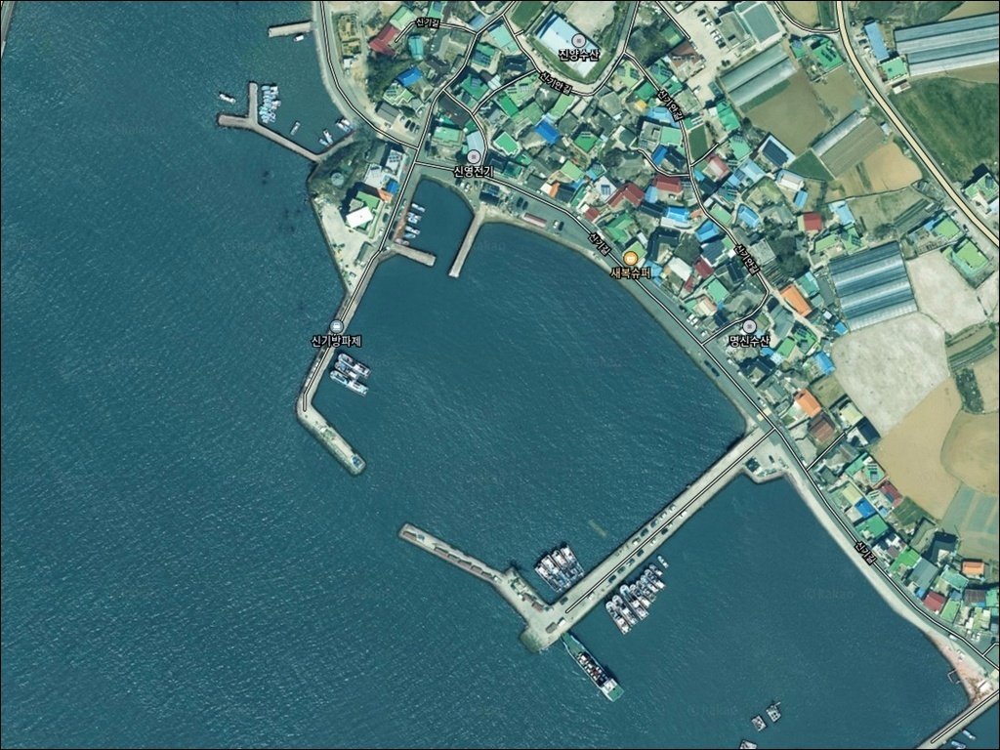
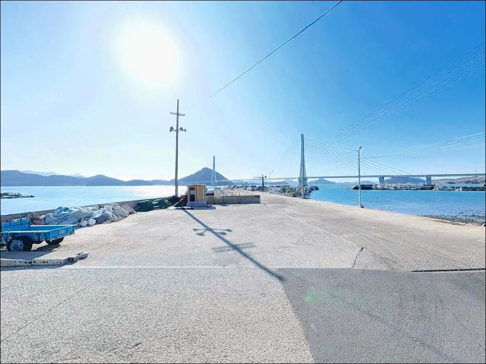
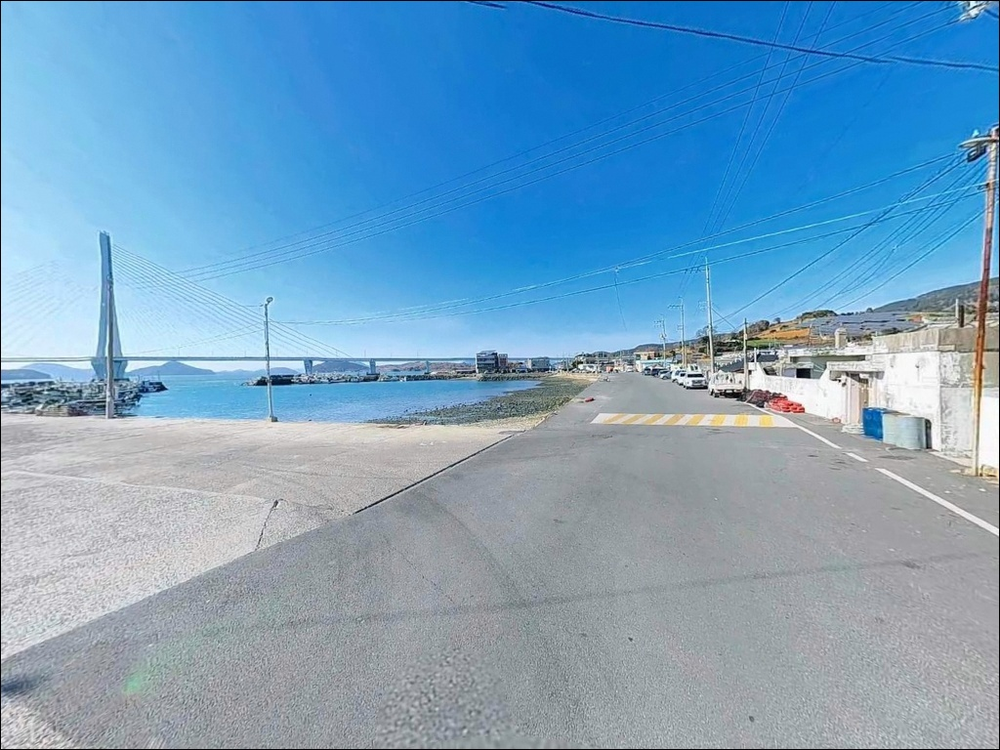
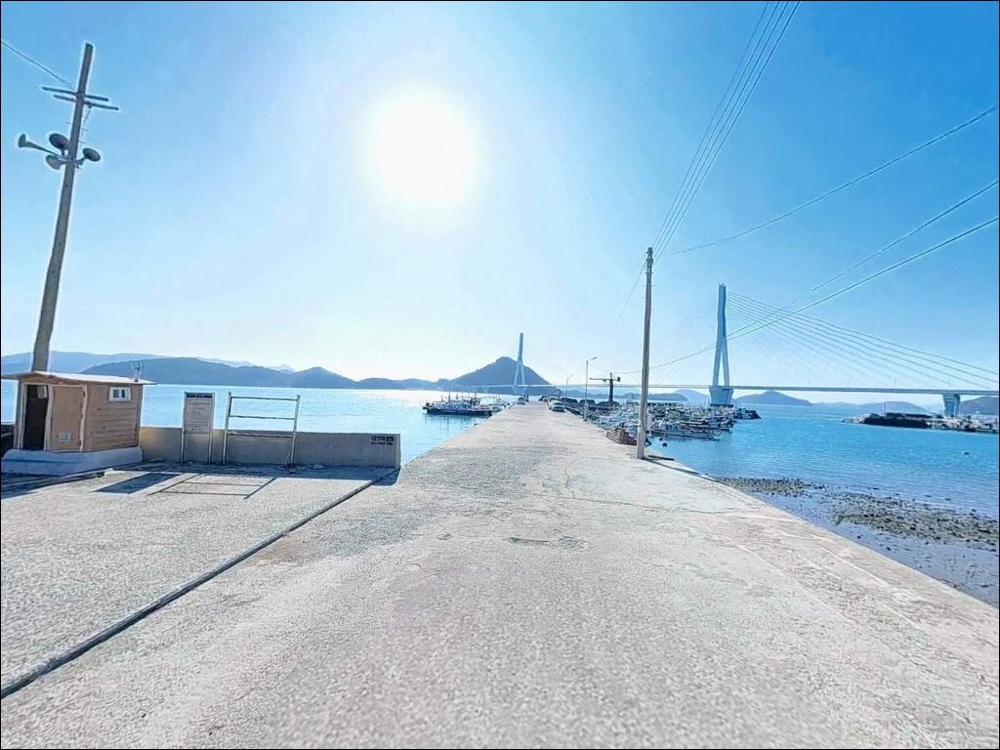
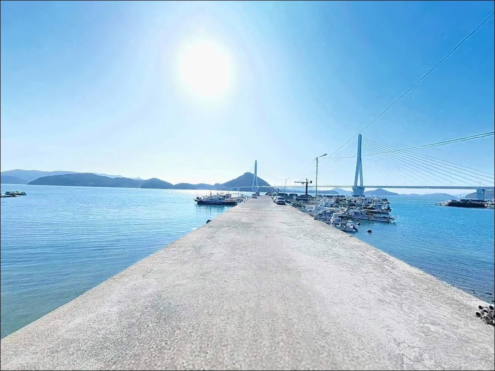
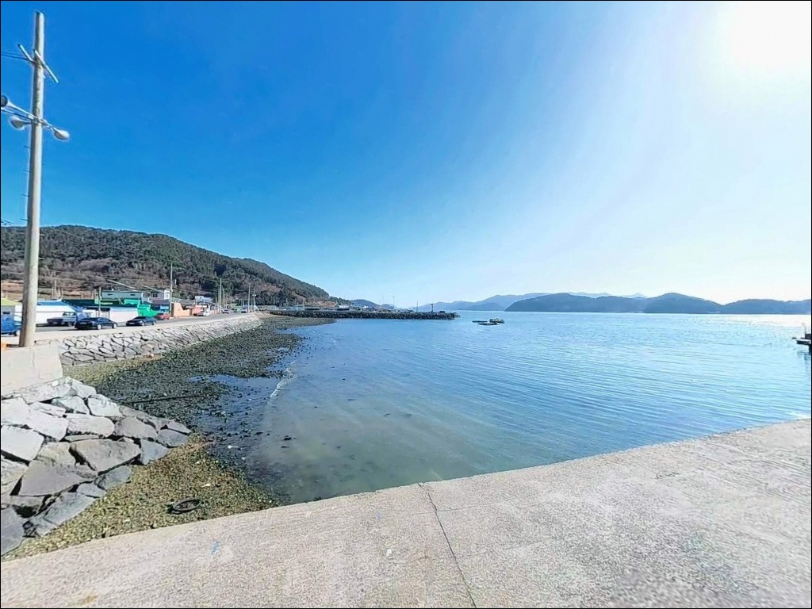
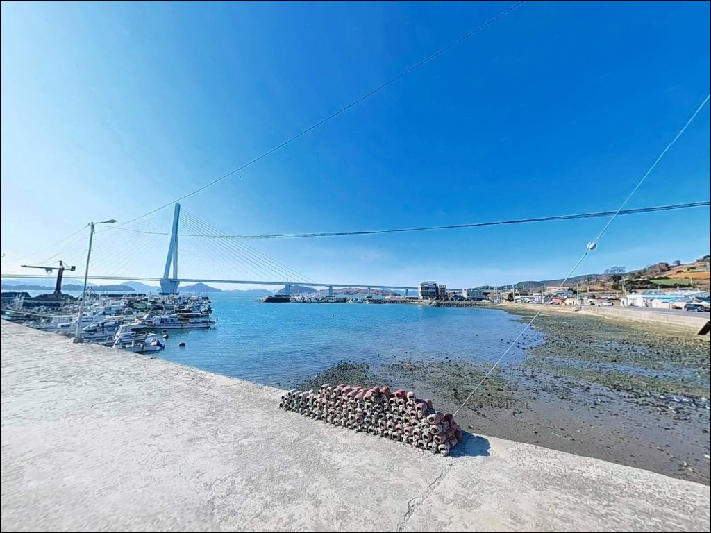
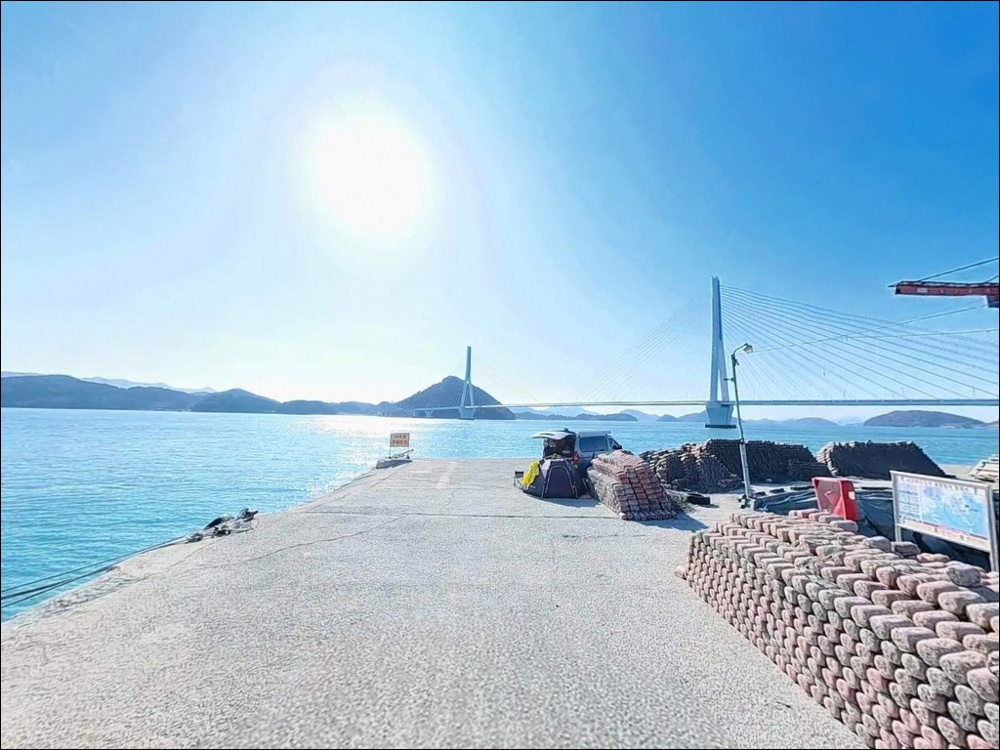
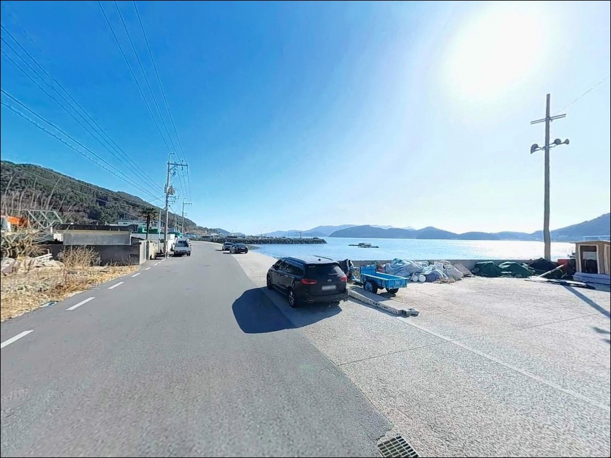

화태대교 수로 조류 심한 신기방파제, 30호 봉돌로 바닥 잡은 원투낚시
이 페이지에는 광고(제휴 링크 포함)가 있으며, 광고 링크를 통해 구매하면 운영자가 판매 수익 또는 수수료를 받을 수 있습니다. 포인트 사진: 카카오맵 스카이뷰·로드뷰. 이 페이지의 지도·사진 이미지는 카카오맵의 실제 서비스 이미지와 다를 수 있습니다.


포인트 안내
신기항(신기방파제)
전남 여수시 돌산읍 신복리 1111-19
화태대교 수로와 맞닿은 신기항 방파제는
조류가 강하기로 알려진 구간입니다.
평소 쓰던 채비 그대로 들어가면
바닥을 못 잡고 흘러가다 끝나는 경우가 많습니다.
봉돌 무게 선택과 물때 타이밍이
이 포인트의 조과를 가르는 기준입니다.
이 글은 신기항(신기방파제)의
진입 동선, 차박 여건, 조류 기반 낚시 여건,
방식별 공략 조건에 집중합니다.
조황 단정이나 특정 어종 보장은
이 글의 범위에 포함되지 않습니다.

1. 진입 동선과 포인트 접근성
신기항 진입은 돌산대교를 건너
17번 일주도로를 따라 남쪽으로 내려오다
화태대교 접속로 직전에서
신기마을 방향으로 빠지는 구조입니다.
왕복 2차선 이상의 포장도로로
비포장 구간 없이 연결되며,
분기 지점이 명확해
초행 차량도 진입이 수월합니다.
항구 진입부는 좁은 구간이 존재하지만,
안쪽으로 들어서면 물량장이 광활하게 펼쳐지는 구조입니다.
캠핑카나 카라반 등 대형 차량도
진입과 회차가 가능한 수준이며,
낚시 자리 바로 뒤에 차를 세우는
차낚 운용도 이 포인트에서 가능합니다.
주차 1순위는 여객선 터미널 앞 공터입니다.
금오도 비렁길 여객선 이용객과
낚시객이 함께 쓰는 공간이지만
10대 이상 수용이 가능한 평탄한 포장면입니다.
방파제 입구 쪽 도로변에도
소형 차량 3~5대 병렬 주차가
가능한 공간이 확보되어 있습니다.

2. 차박 환경과 야간 체류 여건
신기항은 여객선 터미널이 인접한 지방어항입니다.
화태대교 경관 조명과 항내 가로등 덕분에
야간에도 기본적인 밝기가 확보되는 환경입니다.
완전한 어둠을 기대하는 야간 관찰 목적에는
맞지 않지만, 낚시 후 차 안에서 쉬는
단기 체류형 차박에는 적합한 조건입니다.
신기마을은 소규모 어촌 마을로
민가가 띄엄띄엄 분산된 구조입니다.
방파제와 물량장 주변은 항구 시설 중심이어서
밀집도가 낮고 차박 프라이버시 확보가
비교적 용이합니다.
다만 여객선 운항 시간대인 주간에는
선착장 통행과 차량 이동이 겹치므로,
주차 자리는 작업 동선과 겹치지 않는 곳을
먼저 확인해 잡는 것이 기본입니다.
가막만 내측 위치 특성상 외해 파도 노출이 적고
바람막이 구조가 형성되어 있습니다.
화태대교 방향에서 조류 소리가 들리는
환경이지만, 물량장 안쪽 자리라면
수면 파동이 적어 야간 체류에 방해가 되는
수준은 아닙니다.


3. 주변 편의시설 및 인프라 현황
신기항 여객선 터미널 내
공중화장실이 위치합니다.
관리 상태가 양호한 편으로
낚시와 차박 모두 기본 위생 여건이
충족되는 환경입니다.
방파제에서 터미널까지 도보로
이동 가능한 거리입니다.
편의점은 세븐일레븐 여수신기항점이
방파제 도보권 내에 위치합니다.
식수와 간식류 현장 보충이 가능한
거리입니다.
반경 3km 이내로 이동하면
돌산읍 군내리 방향 상권에서
마트, 식당, 낚시점을 이용할 수 있습니다.
신기항은 갈치·볼락·문어를 대상으로 하는
선상낚시 출항지로도 기능합니다.
도보 방파제 낚시가 여의치 않은 날에는
선상 출항도 이 포인트에서
연결 가능한 구조입니다.

4. 진입 전 반드시 챙겨야 할 준비사항
신기항 방문 전에 먼저 확인할 것은
바다타임 기준 물때와 조류 예보입니다.
화태대교와 연결된 수로에서
조류가 강하게 형성되는 구조이므로,
사리 전후에는 채비 안착 자체가 어려워지는 상황이
발생할 수 있습니다.
조금 전후나 간만조 전후 타이밍을
기준으로 출발 시각을 맞추는 것이 좋습니다.
채비는 평소보다 무거운 봉돌을 준비해야 합니다.
원투낚시 기준으로 25~30호 이상의 봉돌이
이 포인트 조류 조건에 맞으며,
여분 채비는 넉넉하게 챙기는 편이 좋습니다.
암반이 섞인 바닥 구조상
밑걸림으로 인한 채비 손실을
어느 정도 감수해야 합니다.
방파제 뒤편으로 전선이 지나가는 구간이 있습니다.
원투 캐스팅 시 채비가 걸리지 않도록
자리 선정 후 주변 장애물을 먼저 확인하십시오.
야간 낚시에는 헤드랜턴과 예비 배터리,
구명조끼를 반드시 챙겨야 하며,
여객선 입출항 동선에 채비를 던지지 않는 것이
기본 매너입니다.

5. 화태대교 수로가 만드는 낚시 여건
신기항(신기방파제)는 두 개의 방파제로 구성되며,
입력 주소 기준 북측 큰 방파제가 주요 낚시 구역입니다.
이 방파제의 중간 꺾이는 지점이 핵심 포인트로,
화태도 방향 수로로 장타를 보낼 때
조류 변화를 타는 자리가 살아납니다.
수심은 방파제 끝단 기준으로 7~10m 이상이며,
저질은 펄과 모래, 군데군데 암반이 섞인 구조입니다.
외항 석축 구조는 테트라포드 없이
발판이 편안한 형태로 되어 있어
도보 이동과 낚시 자리 이동이
비교적 자유롭습니다.
내항 쪽은 수직 벽면이며 수심이 상대적으로 얕습니다.
화태대교 수로 영향권에 놓인 신기항 방파제는
조류 세기에 따라 채비 무게 선택이 조과를 결정합니다.
정조 타이밍에는 어떤 방식이든
채비 운용이 안정되면서 입질이 살아나는 편이고,
사리 물때 강조류 구간에서는
어떤 채비를 써도 흘림이 심해집니다.
출조 전 최신 조황은 검색을 먼저 해보십시오.


6. 포인트에 어울리는 낚시 스타일
원투낚시가 이 방파제에서 가장 대중적인 방식입니다.
방파제 중간 꺾이는 지점에서
화태도 방향으로 장타를 날리면
도다리(봄), 보리멸, 붕장어, 노래미 계열을
기대해 볼 수 있는 지형 조건입니다.
봉돌 무게는 조류 상황에 맞춰 현장에서 조정하는 것이
이 포인트 원투의 기본 전제입니다.
에깅은 가을 시즌 이 포인트의 핵심 방식입니다.
가막만 내만 특성상 갑오징어 서식에 적합한
모래·펄 바닥이 형성되어 있으며,
방파제 콧부리와 수로 입구를 집중 공략하는 방식이
맞습니다.
조류가 빠르므로 에기 싱커 선택 시 충분한 무게를
확보해야 바닥층 탐색이 가능합니다.
8월 이후에는 갈치 루어 낚시도 이 포인트에서
성행하는 편입니다.
볼락 라이트게임과 찌낚시도
석축 구조 포인트의 특성을 살린 방식입니다.
외항 석축 끝단과 테트라포드 주변은
볼락이 서식하기 좋은 지형 조건을 갖추고 있습니다.
야간 집어등을 활용한 지그헤드 채비가
선착장 인근 암초 경계 구간에서
효율적이며, 릴찌낚시로는
방파제 외항 측면 라인을 따라
감성돔을 狙노려 볼 수 있습니다.

7. 대안 포인트와 플랜 B 동선
신기항 방파제 조류가 너무 강하거나
물량장이 여객선 이용객으로 혼잡할 때는
화태도 방향 독정방파제가 첫 번째 대안입니다.
화태대교를 건너면 바로 연결되는 거리이며,
수로 흐름과 비슷한 조류 여건을 갖추고 있어
신기항과 같은 채비 감각으로
이어서 공략할 수 있는 포인트입니다.
돌산 남부 방향으로 차량 10분 거리에
우두리방파제가 있습니다.
돌산항 국가어항 인근으로
볼락·감성돔·숭어를 기대할 수 있는 구조이며,
인근에 낚시점과 편의 인프라가
갖춰져 있어 장시간 체류에도
안정적인 포인트입니다.
향일암 방면으로 차량 20분 거리에
임포방파제가 있습니다.
외해 노출이 있어 에깅(무늬오징어·갑오징어)과
루어낚시에 잘 맞는 구조이며,
신기항에서 에깅 조과가 아쉬울 때
묶어서 돌아보기 좋은 동선입니다.
넓은 물량장과 시설을 갖춘
돌산항은 차박 대체 후보로
서측 약 7km 거리에 있습니다.

조류를 읽으면
신기항이 달라 보입니다
찌낚시나 에깅, 원투낚시를 즐기는 낚시인이라면
신기항(신기방파제)의 지형 조건은
복수 방식으로 운용하기에
구조적으로 잘 맞습니다.
테트라포드 없이 발판이 편한 석축 구조,
수심 7~10m 안팎의 외항,
그리고 화태대교 수로가 만들어내는
조류 흐름이 이 포인트의 핵심입니다.
넓은 물량장과 발판이 편한 석축 구조 덕분에
신기항은 도보 낚시와 차낚을
동시에 즐길 수 있는 포인트입니다.
다만 조류 판단 없이 진입하면
사리 전후 강조류 구간에서
채비가 버티지 못하는 상황을
맞닥뜨리게 됩니다.
물때 확인, 봉돌 무게 대응, 전선 구간 확인,
이 세 가지를 갖추고 들어서면
돌산도 남부에서 만족도 높은
출조가 될 수 있는 곳입니다.
여객선 터미널 화장실과
도보권 편의점까지 갖춰진 환경이라
낚시 마치고 조용히 하룻밤 머무는
차박 여행자에게도 진입 문턱이 낮은 포인트입니다.
화태대교 경관 조명 아래
낚시와 차박을 함께 즐기기 좋은
돌산 남부의 생활낚시터입니다.